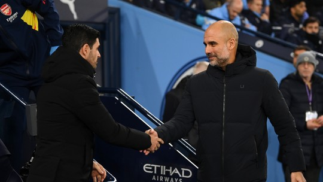

Futebol
Para o City pode ser uma conquista histórica, tornando o clube tetracampeão inglês,
algo inédito no campeonato e para o Arsenal vale a quebra de um jejum de 20 anos da última conquista
Atualizado em 19/05/2024
Ler mais
 Futebol
Futebol
Atacante foi multado pelo Flamengo e teve a camisa 10 retirada após foto vazada em que aparece com a camisa do Corinthians, o que desagradou diretoria, jogadores e comissão técnica do clube
Atualizado em 17/05/2024
Ler mais
Futebol
Após 4 anos, Revista Francesa responsável pela premiação estuda entregar o prêmio para o atacante, que fez uma grande temporada tanto coletiva quanto individual
Atualizado em 16/05/2024
Ler mais
Futebol
Com grandes atuações nas semis da Champions, brasileiro passou a ser um dos favoritos para conquistar o prêmio e alguns jogadores do elenco estão em campanha para que Vinicius vença o prêmio
Atualizado em 16/05/2024
Ler mais